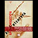
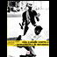
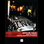

« Voltar para a página da Galeria de Arte
Site da Editoria Em Debate
Catálogo de Livros
Revista Eletrônica
Galeria das Capas
As capas dos livros da Editoria Em Debate da edição de 2014
Prévio
Próximo



Tweetar
Deseja ler esses livros?
Baixe todos no site da Editoria Em Debate